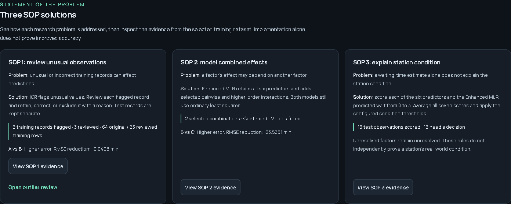
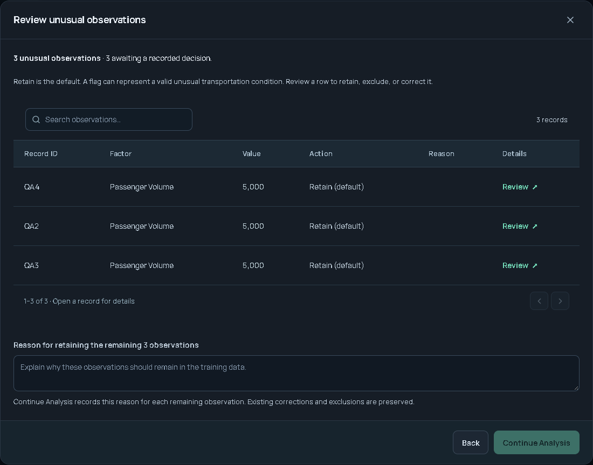
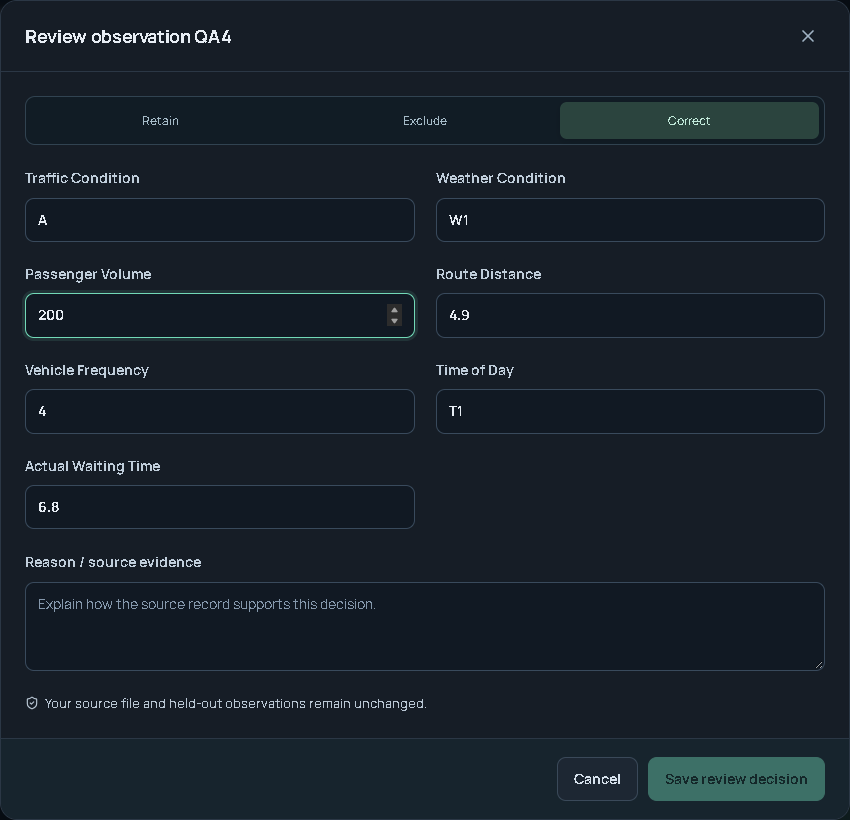
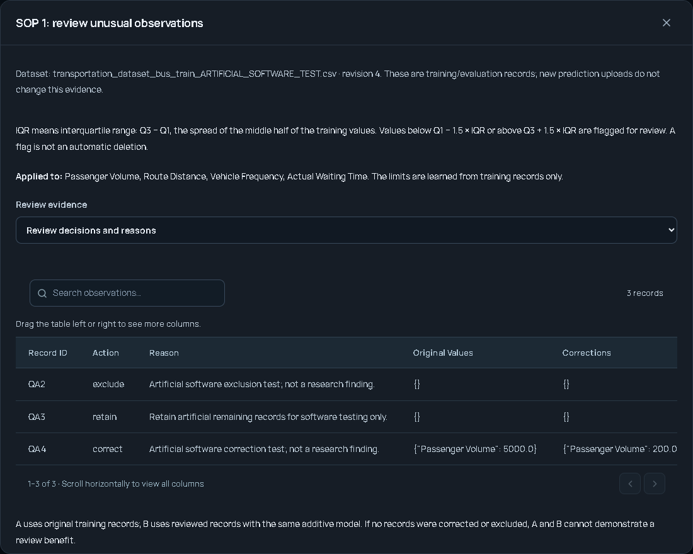
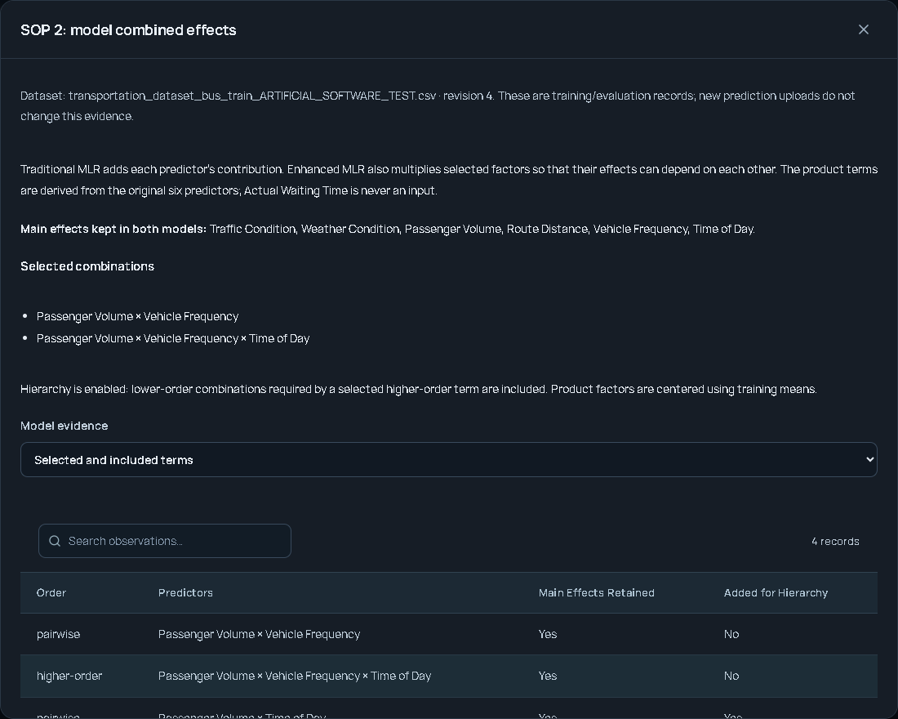
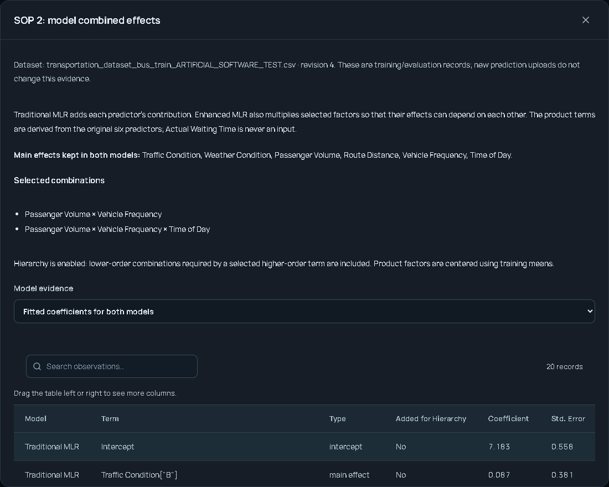
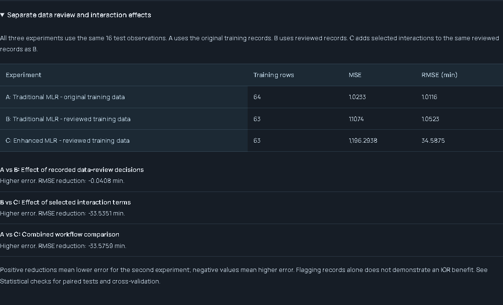
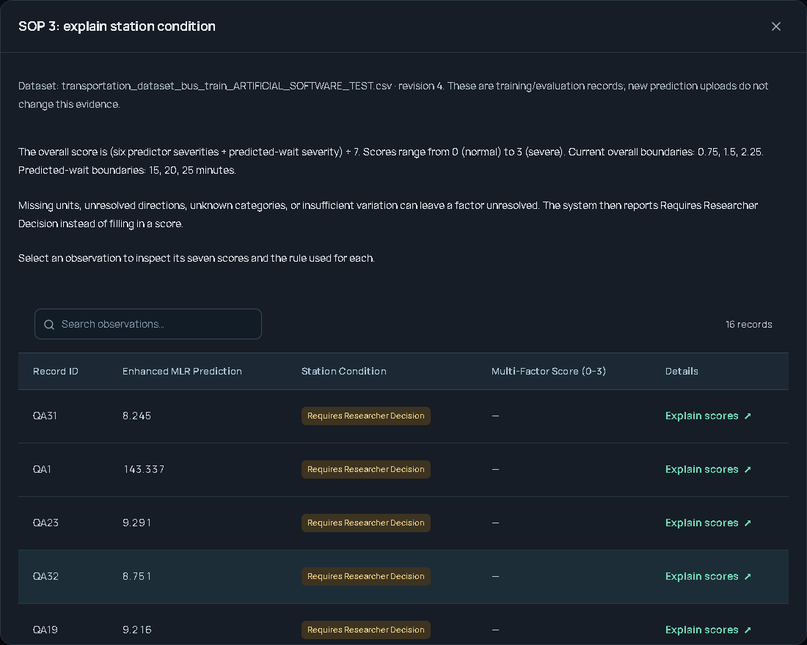
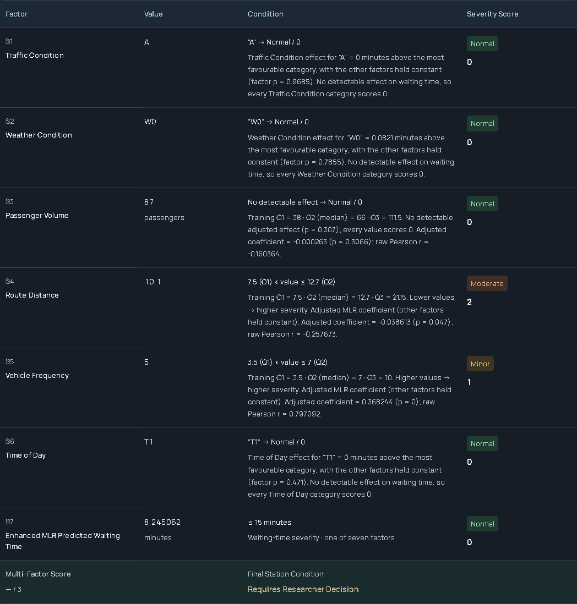

A practical screenshot guide | Transit Lab | 20 November 2026

What this document explains. The system estimates waiting time with Traditional and Enhanced Multiple Linear Regression (MLR). It also supports reviewing unusual training records, modeling combined predictor effects, and explaining station conditions. This guide uses the system’s implemented SOP labels; it is not a replacement for the exact wording of your manuscript’s research questions.
How to find these buttons. Open Analyze. Scroll below Transportation Dataset and Analysis Result to Three SOP solutions. Each card has a View SOP evidence button. Upload a training dataset to inspect its configuration and review evidence; run the analysis to obtain model comparisons and station scores.
About the screenshots. These are actual application screenshots captured in an isolated session with artificial software test records. They demonstrate functioning controls and outputs. Their counts, errors, coefficients, and classifications are examples, not findings from recorded Philippine transport observations. Your research workspace was not modified.
Six inputs → two predictions → station interpretation
The six predictors. Traffic Condition, Weather Condition, Passenger Volume, Route Distance, Vehicle Frequency, and Time of Day are the input information. Think of these as clues about the transport situation. Actual Waiting Time is the answer that the models learn to estimate, not a seventh input predictor.
Training means learning from examples. A training dataset needs recorded actual waiting times. The system learns how the six inputs relate to those recorded waits. Some observations are held aside as test records, so the models are checked on answers they did not use during fitting.
Prediction means applying what was learned. For a new file, Actual Waiting Time can be entirely blank or the column can be omitted. Use the normal Upload Dataset and Analyze Dataset controls. The system applies saved, trained models and displays separate Traditional and Enhanced predictions. All six predictor fields must still be valid.
Why the actual column stays blank. A prediction is an estimate. The actual value is what was observed in reality. Keeping the two separate allows a fair comparison later. Without recorded actual values for those new rows, the system cannot calculate their prediction errors, MSE, or RMSE.
Three comparisons to remember. Arm A: the Traditional additive model fitted on original training rows. Arm B: the same additive model fitted on reviewed training rows. Arm C: the Enhanced model with selected interactions, fitted on the same reviewed rows as B. All three are evaluated on the same test observations. A versus B examines data-review effects; B versus C examines interaction effects; A versus C examines the combined workflow.
What happens when the dataset changes?. A new training dataset produces its own review, models, and evidence after analysis. A new blank-target file receives predictions from the selected saved models. The SOP cards still describe the saved training/evaluation dataset; the new file’s station scoring is available with its prediction results.
Where to click: Analyze Dataset → Review unusual observations

The problem in plain language. An unusually large or small value can influence a fitted model. But an unusual value is not automatically a mistake: a very crowded station could be real. The system first flags records so you can investigate them.
What the system does. It calculates the interquartile range, or IQR, from training values. IQR = Q3 − Q1: the spread of the middle half of the values. With the default multiplier 1.5, values below Q1 − 1.5 × IQR or above Q3 + 1.5 × IQR are flagged. The configured columns and multiplier determine what is checked.
What to show during the defense. Point to the flagged observations and open Review for a row. Explain that the rule identifies candidates for investigation, while the recorded review decision determines what happens to the training data. Held-out test rows are kept separate from this review.
Where to click: Review → Retain, Correct, or Exclude

Retain. Keep a record when it is unusual but supported by its source. A valid extreme observation can be important evidence of a crowded or disrupted service.
Correct. Change a value only when the source supports a correction, such as a verified transcription error. Enter the corrected value and a reason or source reference. Do not change values merely to obtain a lower error.
Exclude. Exclude an invalid or out-of-scope training record with a documented reason. Exclusion is a review decision, not the automatic consequence of an IQR flag.
What this solves. The feature makes data review traceable. The system records the decision and reason so someone can inspect what changed. It does not guarantee that predictions will improve: that must be checked using the comparison results.
Where to click: View SOP 1 evidence → Review decisions and reasons

How to read the evidence. Use IQR limits to show the screening rule, Flagged observations to show which rows triggered it, and Review decisions and reasons to show the response. Together, these explain how the reviewed training dataset was produced.
How to check whether review helped. Expand Separate data review and interaction effects. Compare A with B using their errors on the same test rows. A smaller B RMSE supports a benefit from the recorded review decisions for this dataset. Equal or larger error does not support improvement.
A simple explanation you can say. “Our first solution identifies unusual training observations and lets us record a justified decision for each one. We keep the test data separate, then compare the original and reviewed training approaches to see whether the review helped.”
Where to click: View SOP 2 evidence → Selected and included terms

The problem in plain language. One predictor’s effect may depend on another predictor. For example, a high passenger count may be associated with different waits when vehicles arrive frequently versus infrequently. This is the reason to investigate combined effects; the example itself is not a measured finding.
Traditional versus Enhanced. Traditional MLR adds the separate contributions of the six predictors. Enhanced MLR keeps those contributions and adds selected product terms. The screenshot shows Passenger Volume × Vehicle Frequency and Passenger Volume × Vehicle Frequency × Time of Day. The products come from the existing inputs; they do not require extra dataset columns.
What hierarchy means. When hierarchy is enabled, the system includes the lower-order terms needed by a selected higher-order interaction. Centering uses training means before constructing products. Both models still use ordinary least squares; the enhancement changes the terms in the model.
Where to click: Model evidence → Fitted coefficients for both models

What a coefficient is. A coefficient is a fitted number used in the prediction formula. In a simple additive model it describes a predictor’s contribution with the others held fixed. With interactions, the contribution depends on the combined terms, so a single coefficient should not be interpreted by itself as the total effect.
What else to inspect. Use Selected and included terms to verify which combinations were fitted. Use Model diagnostics to inspect model issues such as collinearity or rank deficiency. Very similar or unchanging predictors can make individual coefficients difficult to interpret.
How to check whether interactions helped. Compare B with C, because they use the same reviewed training rows and the same test observations. This isolates the change in model specification. A lower C RMSE supports better prediction on those test rows; a worse result must be reported as worse.
A simple explanation you can say. “Our second solution allows predictors to work together through interaction terms. We compare the additive and interaction models on the same test observations to determine whether those additional terms actually help.”
Where to click: Separate data review and interaction effects

MSE and RMSE in everyday terms. For each test observation, subtract the recorded wait from the predicted wait. MSE is the average squared error, in squared minutes. RMSE is the square root of MSE, expressed in minutes. Smaller values indicate smaller prediction errors on the evaluated rows.
Keep the comparison specific. A versus B concerns reviewed data. B versus C concerns interaction terms. A versus C combines both changes and cannot tell you which change caused the difference. The system also exposes statistical checks; interpret them alongside the sample size and evaluation design.
What you can conclude. The presence of an Enhanced model does not automatically mean it is more accurate. State the actual comparison outcome. If no rows were corrected or excluded, the review stage has no changed dataset from which to demonstrate a benefit. If a new file has blank actual times, its two estimates can be compared numerically but their accuracy is not yet known.
Where to click: View SOP 3 evidence → Explain scores

The problem in plain language. A predicted wait is one number. The station-condition feature adds an explanation of the factors behind the situation. It uses the six predictors plus the Enhanced predicted waiting time: seven factors altogether.
How the score is calculated. Each resolvable factor receives a severity score from 0 to 3: Normal, Minor, Moderate, or Severe. The overall score is the sum of all seven scores divided by seven. The configured boundaries turn that average into a station-condition label.
Default boundaries. The default overall bands are below 0.75: Normal Operation; 0.75 to below 1.50: Minor Delay; 1.50 to below 2.25: Moderate Delay; and 2.25 through 3: Severe Delay. The screen shows the current configuration, which takes precedence if changed.
What this result means. This is a rule-based interpretation of an observation. When station identifiers exist, the system can summarize available classifiable observations by station. Neither output is automatically a live station status or independently verified classification accuracy.
Where to look: the Classification factors table

How to read the table. Read the factor name, its observed input or predicted wait, its severity score, and the supporting rule. Predictor scores depend on the selected configuration and training evidence. The table can show thresholds, directions, category mappings, or adjusted-model evidence; explain the rule actually displayed for your run.
Waiting-time severity. By default, a predicted wait of up to 15 minutes scores 0; over 15 through 20 scores 1; over 20 through 25 scores 2; and over 25 scores 3. These are configured bands, not proof that the boundaries are valid for every station.
Why it may say Requires Researcher Decision. A required unit, category mapping, direction, or usable variation may be missing. In that case the system does not manufacture a score or average only the available factors. Verify the input definition and source, then configure supported rules. The screenshot session intentionally includes unresolved conditions.
A simple explanation you can say. “Our third solution explains the condition through seven factor scores. We can open the record and show the rule behind each score. If the evidence is incomplete, the system reports that a decision is required instead of guessing.”
A practical order for presenting the system
1. Introduce the dataset. Show the dataset name and source. Explain what one row represents, its location and period, the six predictors, their units, and whether actual waits were recorded. State whether the displayed results are from observed records or a software demonstration.
2. Demonstrate SOP 1. Open outlier review. Show a flag, a supported decision, and the audit reason. Open SOP 1 evidence to show the bounds and A/B comparison. Explain both what was changed and what the evaluation found.
3. Demonstrate SOP 2. Open SOP 2 evidence. Show the selected combinations and retained six main effects. Then show B/C errors on the common test observations. Say whether the Enhanced model improved, tied, or worsened for this run.
4. Demonstrate SOP 3. Open SOP 3 evidence and select an observation. Explain its seven scores and overall label. If it is unresolved, show the missing evidence. If station summaries are available, describe them as summaries of those observations.
5. Show a blank-target prediction if needed. Upload the new file through the normal dataset control. Select the saved trained models if necessary and choose Analyze Dataset. Show the two prediction columns and the station-scoring explanation. Explain that no error metric can be calculated for these new rows until recorded actual waits exist.
Where this guide was verified. The screenshots were captured with Microsoft Edge/Playwright from the local application. Implementation references: frontend/src/components/SOPSolutions.tsx, StationCondition.tsx, ResearchProtocol.tsx, PredictionOnly.tsx, frontend/src/pages/AnalysisPage.tsx, and src/data_loader.py. The isolated browser workflow verifies review actions, comparisons, target-free prediction, and scoring. Software verification does not establish real-world model validity.